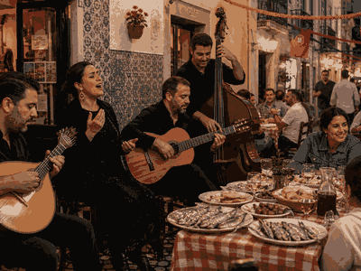
Portugal Day More CultureCulture category
More CultureCulture categoryMore topics, events and calendar moments.
Culture - founding moments
National day
Annual public dates marking independence, unification or constitutional milestones.
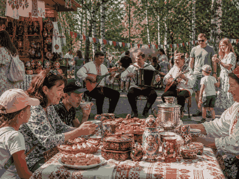
Russia Day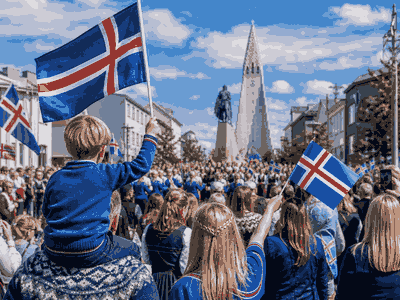
Iceland National Day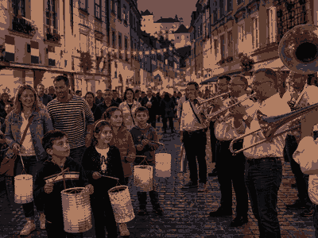
Luxembourg National Day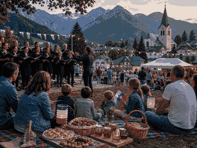
Slovenia Statehood Day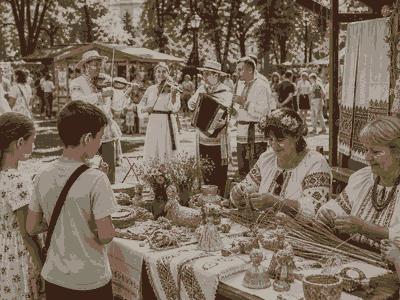
Belarus Independence Day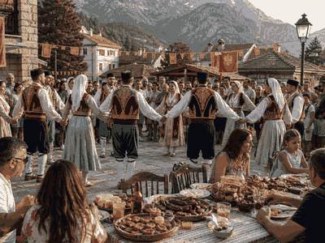
Montenegro Statehood Day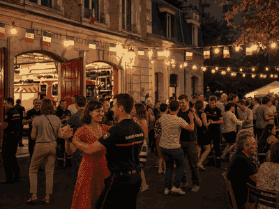
Bastille Day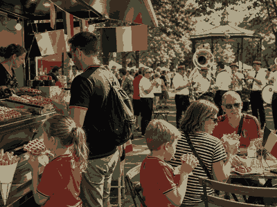
Belgian National Day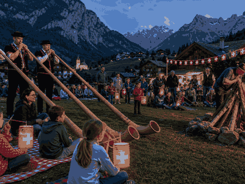
Swiss National Day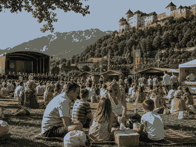
Liechtenstein National Day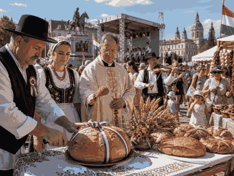
Saint Stephen's Day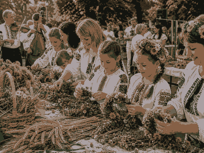
Ukraine Independence Day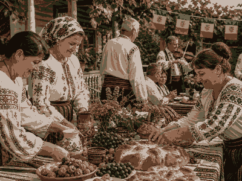
Moldova Independence Day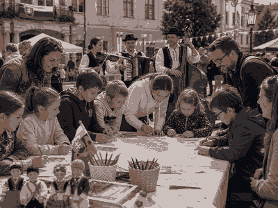
Slovakia Constitution Day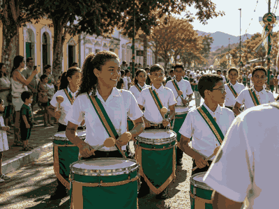
Brazil Independence Day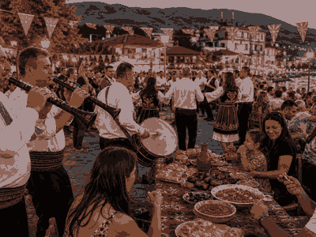
North Macedonia Independence Day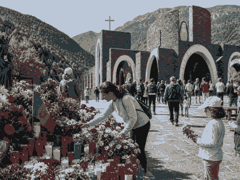
Our Lady of Meritxell Day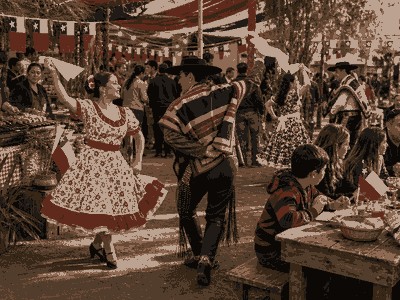
Chile Fiestas Patrias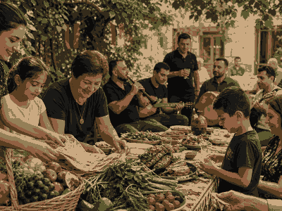
Armenia Independence Day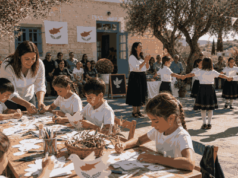
Cyprus Independence Day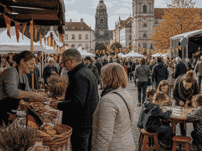
Day of German Unity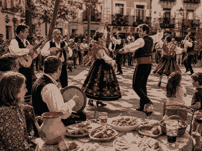
Spain National Day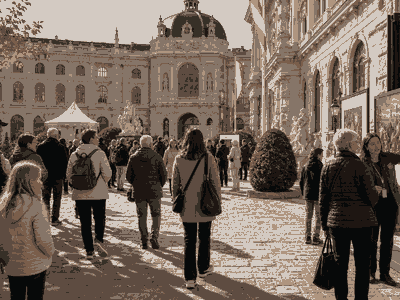
Austria National Day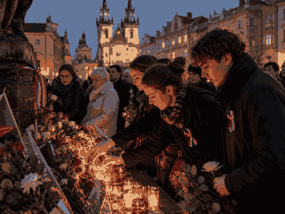
Czech Independent State Day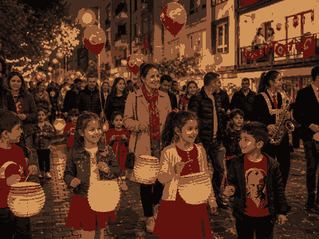
Republic Day of Turkey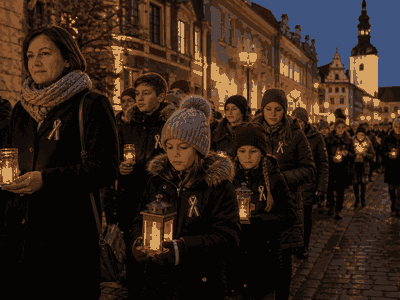
Latvia Independence Day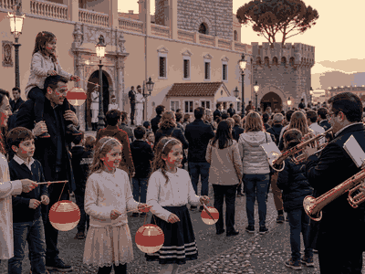
Monaco National Day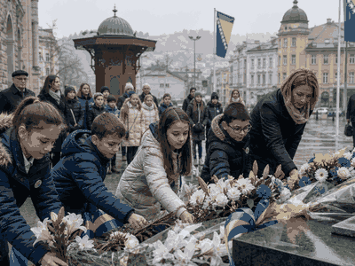
Bosnia and Herzegovina Statehood Day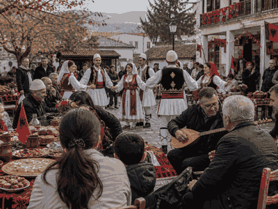
Albania Independence Day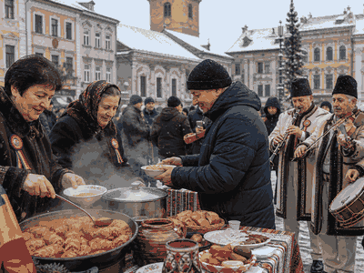
Great Union Day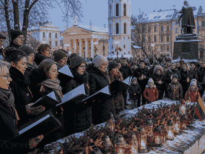
Lithuania Independence Day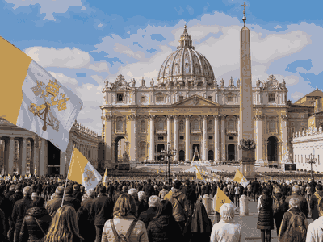
Chair of Saint Peter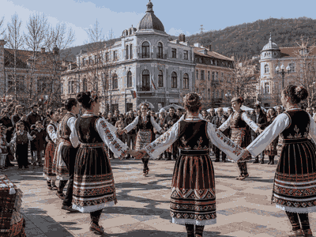
Bulgaria Liberation Day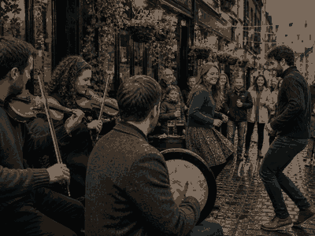
Saint Patrick's Day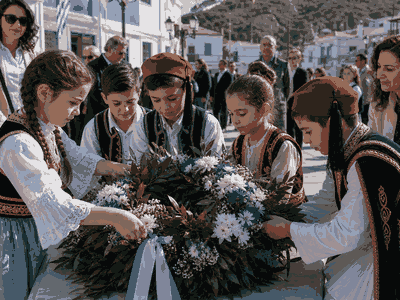
Greek Independence Day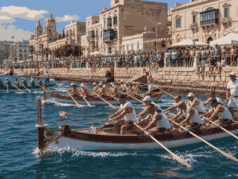
Malta Freedom Day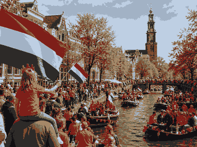
King's Day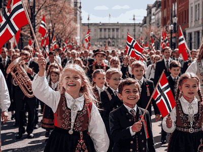
Norwegian Constitution Day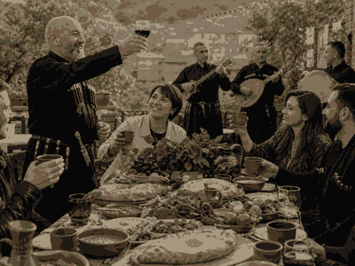
Georgia Independence Day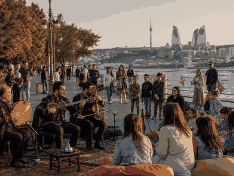
Azerbaijan Republic Day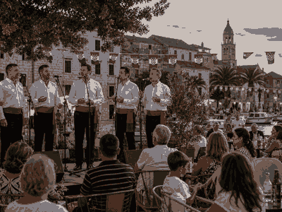
Croatia Statehood Day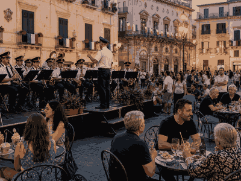
Festa della Repubblica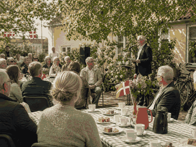
Denmark Constitution Day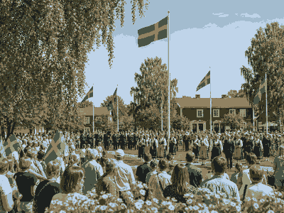
Sweden National Day